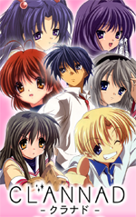
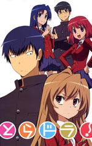
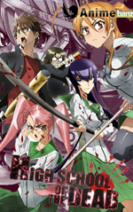
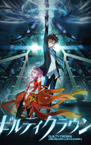

| Name | Cover | Description |
| Death Note | Yagami Light is a genius from Japan who is tired with his life, school and everything else in the world. One day, he found a dark notebook that has the word "Death Note" written on it. Light reads a few sentencs and finds out that whoever's name is on it will die. He thinks that it is a joke and moves on with his life. But later on he gets curious so he starts playing with the notebook again and finds out about its true power. With this power, he tries to change the world. Another genuis known as L work against Light's beliefs. Who will win this power of Gods among humans? | |
| Code Geass | On August 10th, 2010 the Holy Empire of Britannia began a campaign of conquest and took over Japan. Once Japan was taken over, it was renamed as Area 11 and the Japanese are known as Elevens. Lelouch, an exiled Imperial Prince of Britannia posing as a student in Japan, finds himself in the middle of a conflict for the island nation. He meets a mysterious girl named C.C. who gives him Geass, the power of the king. Now with the ability to control others, he may finally could bring down Britannia from within. | |
| Naruto Shippuden | Naruto Shippuden is the continuation of the original anime TV series Naruto. This story follows a much older and mature Naruto and his quest to save his friend Sasuke from Orochimaru. | |
| FullMetal Alchemist | The rule of alchemy says that in order to gain something, one must lose something of equal value. It is the process of taking apart and reconstructing objects into a different shape. The one object that can bring any alchemist into a whole new world of alchemy is the Philosopher's Stone. Edward Elric is a talented alchemist who uses alchemy to bind his brother's soul into a robot while sacrificing one of his arms. This leads to the beginning of their journey to find the Philosopher's Stone to restore their bodies. | |
| Bleach | Ichigo Kurosaki has always been able to see ghosts. After an encounter with Rukia Kuchiki, a Soul Reaper and member of Soul Society, Rukia lend some of her power to Ichigo so that he could fight a Hollow. After that incident, Ichigo finds out that he has to protect everyone from the Hollows and help the spirits find peace. | |
| Clannad |  | Okazaki Tomoya is a delinquent who didn't enjoy life and doesn't do anything. He and his friend Sunohara always skip class and waste their high school days away. One day, he meets Furukawa Nagisa who claims they were friends, but Tomoya ignored it. Tomoya slowly starts to notice Nagisa and befriend her. He finds out she was held back a year due to severe illness and that she wants to revive the drama club. Tomoya helps her achieve her goal since he has nothing better to do. As time goes on, he realizes that life isn't as dull as he once thought. |
| Angel Beats! | Otonashi wakes up to find out he was dead. A girl named Yuri explains that they are in the afterlife and he finds out that he only remembers his name. Yuri tells him that she leads the Shinda Sekai Sensen(Afterlife Battlefront) and wages war against a girl name Tenshi. Thinking that Tenshi isn't evil, he approachs her and finds out that he was wrong. So he joins the SSS to battle against her, but later he starts to be drawn to her. While trying to remember his memory, he unravels the mysteries of the afterlife. | |
| Shingeki no Kyojin (Attack on Titans) | Several hundred years ago, Titans nearly exterminated humans. The humans who survived, walled themselves up with a wall that was bigger than the Titans. Eren and Mikasa witness something horrific as the city walls are destroyed by a colossal Titan and witnessing Titans eat their mother alive. Eren vows to take revenge on the Titans. | |
| Tengen Toppa Gurren Lagann(Heavenly Breakthrough Gurren Lagann) |  |
In a far away future, mankind live underground in huge caves not knowing the world above him. In a small village called Jiha, Simon works as a digger and he discovers a strange glowing object during an excavation. Kamina befriends Simon and both start the Gurren Brigade to escape the village. When the ceiling one day breaks and a monster and Yoko appear from above, it is up to Simon to save them all with a small robot head. Soon after, they journey the world above and find that the surface is a harsh battlefield and it is up to them to fight back against Beastmen. |
| Sword Art Online | In the near future, a Virtual Reality Massive Multiplayer Online Role-Playing called Sword Art Online is released where players control their character with their bodies using Nerve Gear. As it turns out, players are unable to log out as the game creator is holding them captive unless they reach the final level and defeat the final boss. However if they die in the game, they die in real life. | |
| Steins;Gate | Steins;Gate is set in the summer of 2010 which is a year after the events that took place in Chaos;Head in Akihabara. Steins;Gate is about a group of friends who customized their microwave into a device that can send messages to the past. An organization called SERN tracks them down and the characters have to find a way to avoid capture. | |
| Toradora! |  | Ryuuki Takasu is known as a Yankee thanks to his looks. As it turns out, he was in the same class as his best friend, and his crush. He was also in the same class as the "Palmtop Tiger", Taiga Aisaka who is the best friend of his crush. Despite her small features, she takes nothing from anybody and secretly was in love with Kitamura, his best friend. They both soon work together to support each other in their love conquest. |
| Highschool of the Dead |  | A lethal disease is on the loose around the world, resulting in a huge death rate of humanity and an increase in the numbers of the living dead. Several high school students and a school nurse have teamed up to escape Fujimi High School after the school was attacked by zombies. The group only goal is to survive and figure out how this plague started. |
| Fairy Tail | Fairy Tail is a Mage Guild located in the town Magnolia, in the Kingdom of Fiore. Lucy Heartfilia wishes to become a member of this mage guild. One day by coincidence, she meets Natsu Dragneel and his pet Happy who turned out to be members of Fairy Tail. | |
| Neon Genesis Evangelion | In 2015, the Angels are huge powerful alien war machine attacked Tokyo and the only hope to beat them is the Evangelion, which is a humanoid fighting machine developed by NERV. Only a few people can pilot the Evangelion who are only a handful of teenagers. Shinki Ikari was forced to gain courage and strength to fight and survive or he would risk losing everything. | |
| Mirai Nikki(The Future Diary) | Yuki, a loner who's not very good with people prefers to write diaries on his cell phone and talk to his imaginary friend, Deus Ex Machina- The God of Time and Space. However, Yuki soon learns that Deus was real when he makes Yuki participate in a battle royale against 11 other people. The contestants are given special diaries that can predict the future and a special feature that give either an advantage or disadvantage against each other. They have 90 days to survive or until only one is left and winner gets to be the new God of Time and Space. | |
| Bakemonogatari (Monster Stories) | Koyomi Araragi a third year high school student who has recently survived a vampire attack, finds himself mixed up with all kinds of other apparation: gods, ghosts, myths, and spirits. | |
| One Piece | Monkey D.Luffy is a happy-go-lucky kind of pirate who's only reason of becoming a pirate is to find the great treasure One Piece. Luffy and his crew travel across the Grand Line, in search of One Piece while experiencing crazy adventure. | |
| Kuroshitsuji (Black Butler) | A young boy loses everything he once help dear to a vicious plot. In his moment of death, he makes a deal with a demon, his soul for revenge. Ciel Phantomhive is the head of the Phantomhive corporation and doing underground works for the Queen of England with his new partner demon butler, Sebastian Michaelis.The story follows the two unravel the plot behind the horrible tragedies in his life. | |
| Ano Hi Mita Hana no Namae wo Bokutachi wa Mada Shiranai (Anohana: The flower we saw that day) | Jinta Yadomi and his childhood friends drifted apart after an accident with one of their friend. Now in the high school years, a sudden surprise forces each of them to confront their guilt over what happened the day of the accident and come to term with the ghosts of their past. | |
| Dragon Ball Z |  |
Goku is back with his new son, Gohan, but just when things are settling down, the adventure continues. He meets new people, stonger enemies, gaining allies, as he still finds time to raise a family and be himself. |
| Guilty Crown |  | It takes place in Tokyo in 2039 after the outbreak of the Apocalypse Virus which was known as the Lost Christmas. Since then, Japan has been under control by GHQ. Ouma Shu mistakenly got a rare and great power. He can use "The Right Hand of the King" to extract "voids" which are tools/weapons from people's heart. After this incident, his personality and life changes from a shy person to joining a rebel group called Funeral Parlor after meeting a girl name Yuzuriha Inori. |
| Shakugan no Shana(Shana of the Burning Eyes) | Sakai Yuji thought that his normal days would last forever. However, it was interrupted by a girl with red hair who calls herself Shana. The girl was fighting against a monster that looks like a large doll who attacked people who are frozen in time. Although Yuji survived, Shana told him that he didn't exist anymore. She calls herself Flame Haze and she fights monsters from another world. She told him that he was a "Torch" which is the substitute of his real existence which was already devoured. They find out that he was a special Torch that contains a precious item in it. That is how his life struggles begin with the girl. | |
| Zero no Tsukaima(The Familiar of Zero) | Louise is a magician at Tristein Academy and her nickname is Zero Louise because she cannot use her powers properly. There is a test that requires her to summon a familiar and she summoned Hiraga Saito an average Japanese boy. Louise cannot attempt another summoning and Saito cannot return to Japan so they both end up living together. | |
| School Days | Makoto Ito, a young Japanese high school student was in the train going to school when he was interested in a fellow student Kotonoha Katsura. When an acquaintance of his, Sekai Saionji discovers his secret crush, she helps introduce the two of them and they both started dating. However, Sekai started being jealous of the two since she started having feelings for Makoto. On his way to one of his date, he saw Sekai sitting by himself at the train station and he was determined to repay her, she kissed him and left him dumbfounded waiting for his date. |
©2014 Wan Ahmad Akil Ashraf. Resources